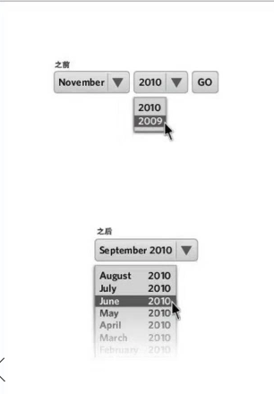
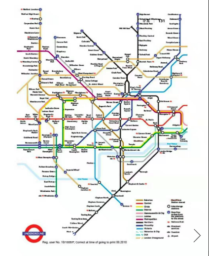
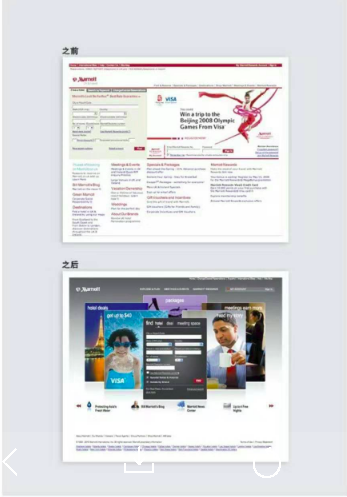
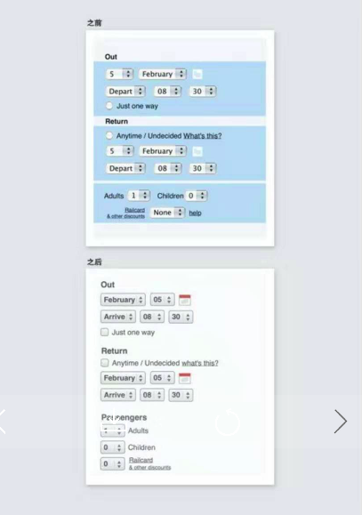
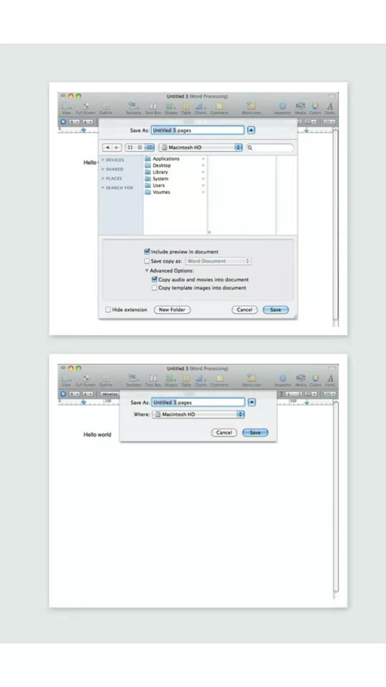
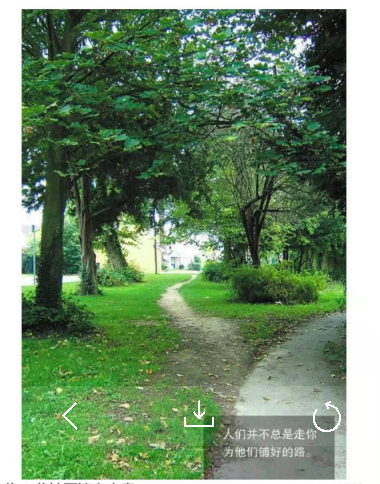

书中分成8章来讲述，其中第一章介绍什么是简单，为什么要简单，第二章了产品设计的步骤，由人物、场景而到情节来设计产品的逻辑，第三章总的来介绍了4种策略：删除、组织、隐藏、转移，后四章对4种策略的分述，最后一章所示算是结语。
前几天写了一个读书方法论，是从读这本书体会到的一个认知方法，那现在，将通过这个方法中想到的3个层次来总结一下这本书。
具体设计
错误提示的挫败感:对时间选择的设计
认知分层:地铁线路的颜色设计
突出重点：对万豪酒店页面的重新设计
网格优化
渐进展示：保存
期望路径与实际路径

知识
产品使用环境分析：
办公室：容易受打扰
家中：电视剧空隙
户外：繁忙
用户分类
专家用户：发烧友、高级用户
随意用户：用过类似产品，对新功能要求简单，中级用户
主流用户：有需要才会用的，问题导向型用户
产品与故事
产品的概念包括了使用者、使用环境，以及在什么情节中使用，这就构成了一个故事情节。
故事情节需要从观察使用者出发，然后从众多场景中，抽象出故事。故事中包含着需求与产品的特点
故事的精进还需要与不同的人去讲述，看其对故事（产品）的反馈，反馈的过程可以借助于原型与竞品。
墨水率
并通过提出了一个有趣的概率：数据墨水率，墨水（像素）不应该浪费在那些不是内容或者重要的内容上。
设计原则
整体原则
办公室里假如用户来讨论需求是无效的
最好的观察用户的途径是从竞品与原型来观察用户的需要
用户并不知道自己提出需求所带来的负面作用
删除原则
紧跟核心，去掉不必要的功能，去掉不完善的功能，强化核心功能
突出重点可以用颜色与大小来提示
颜色只用在最关键的一两点上
大小而不是粗体提示重要的内容，非关键的尽量是小字体，原文是如果这个内容重要程度是1/2，那么使用1/4的字体。颜色也常用来表达认知分层
尽量避免错误提示，这样会给用户带来挫败感
尽量避免结构化表单，这样会给人以约束
能用图片就用图片，能少用文字就少用文字，精简文字，去掉冗余的描述
尽量避免打扰用户的注意力，使其分心
避免给用户过多的选择，过多的选择让人无法选择
为用户提供更少的选择，并为选择提供默认选项有选择尽量又默认选项
组织原则
使用组织时，最重要是只强调一两个最重要的主题
围绕这些主题进行分块，这些主题本身是根据用户行为来分类最好先对内容有效的组织，然后再考虑如何设计搜素
按时间与空间来组织
控制信息的层次，不超过3层，标题、子标题、正文。
降低控制信息，如网格，加粗，用均匀的浅色代替避免用户自定义界面，用户往往不知道如何最有效布置
渐进展示内容，普通用户使用默认的简单功能，而必要时候可以选择更细节的功能
避免使用“高级”等字眼，会给人以被鄙视的暗示
转移原则
手机端与电脑端的差异：手机端不适合录入文字，并且是及时使用
人与电脑的差异：人更是个与计划，电脑更适合与记录
隐藏原则
- 不得不存在，但有很少用的，最佳案例是设置部分
设计思想
产品的设计产生与对用户的观察、思考与想象。
想象的过程就像是写故事，人物、场景、情节，也就是某些人，在什么样的情况下，使用这个产品，这个场景中有哪些故事会发生。这种情况下，人们对产品有着怎样的需要，尤其指的是特点。
产品的设计像是写文章，铭记核心，删减与核心无关的内容
针对大众设计产品，而不是专家
用户并不知道它们提出的需求所带来的负面影响
简单并不是初见的简单，它是在扬起复杂之后的简单
所以最好的设计是大众与专家都觉得很舒服
用户喜欢掌控产品，而不是被产品所掌握
产品需要留白，给用户留有再创造的空间
认知分层
很多时候简约设计是把这个复杂性放在哪里的问题